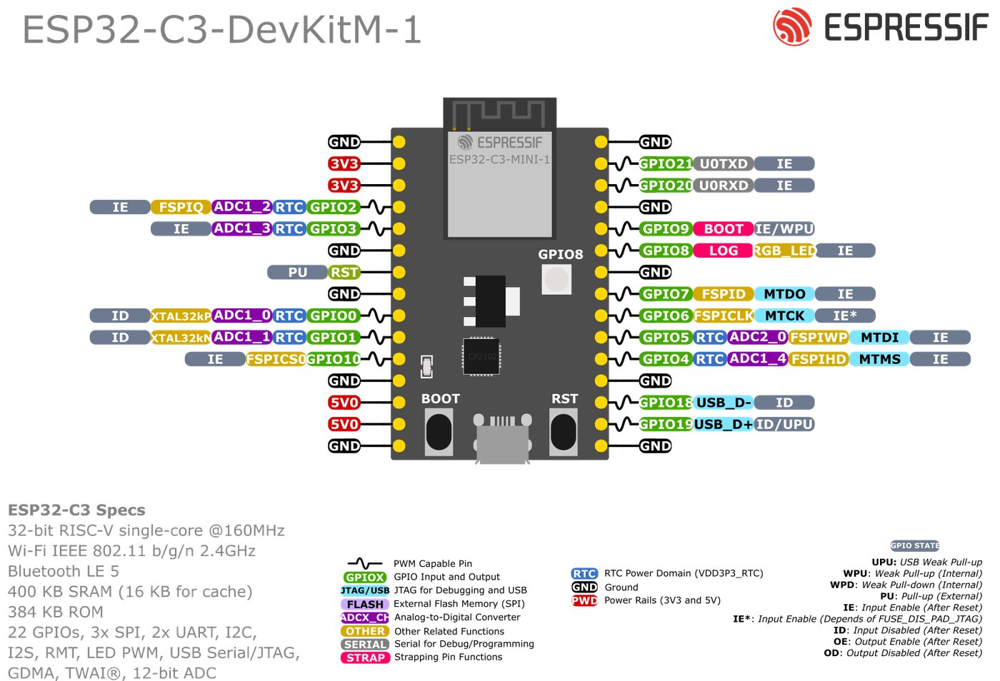
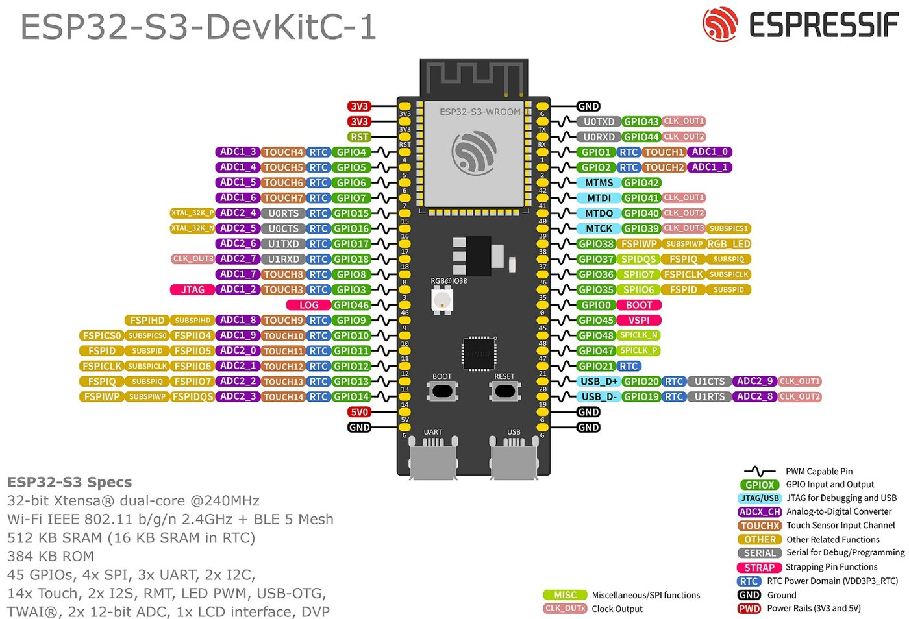

تا اینجا هر پروژه را با هم ساختیم: من پین را انتخاب کردم، کتابخانه را معرفی کردم و کد را خط به خط توضیح دادم. از این درس به بعد، تو تصمیم میگیری. این درس یک پروژه تازه نیست؛ یک «جعبهابزار فکری» است: روشی که با آن هر ایدهای، ساده یا سخت، روی هر مدل ESP32، بدون معلم به یک دستگاه واقعی تبدیل میشود.
🎯 بعد از این درس میتوانی
- یک ایده را با روشی تکرارپذیر (نیازمندی ← پین ← تغذیه ← آزمایش تکهتکه ← ادغام) به دستگاه تبدیل کنی
- با دلیل بین ESP32، S2، S3، C3، C6، H2 و P4 انتخاب کنی
- یک اسکچ را از ESP32 به C3 یا S3 منتقل کنی و بدانی دقیقا چه چیزی خراب میشود
- قطعهای را که هرگز ندیدهای، از روی دیتاشیت و مثال کتابخانه راه بیندازی
- ریست بیپایان، Guru Meditation، Brownout و «I2C پیدا نشد» را روشمند عیبیابی کنی
- پروژه بعدیات را از یک نردبان ۱۲ پلهای انتخاب کنی و مسیر یادگیری بعد از دوره را بدانی
هیچ دورهای همه قطعهها و همه پروژهها را پوشش نمیدهد. تفاوت کسی که «یک دوره دیده» با کسی که «مهندس» است، این نیست که همه چیز را از قبل بداند؛ این است که روش دارد. وقتی با چیز ناآشنا روبهرو میشود نمیترسد، کپیپیست نمیکند و دعا نمیکند که کار کند. قدمبهقدم میرود و هر قدم را ثابت میکند. این درس همان روش را به تو میدهد. آهسته بخوان.
۱. از ایده تا دستگاه: یک روش تکرارپذیر
در پروژه نهایی این روش را یک بار با هم اجرا کردیم. حالا آن را به صورت یک «دستور پخت» کلی درمیآوریم که برای هر پروژهای جواب بدهد: از یک چراغ خواب ساده تا یک ربات.
flowchart TD
A["گام ۱: ایده در یک جمله"] --> B["گام ۲: نیازمندیها (PRD کوچک)"]
B --> C["گام ۳: انتخاب سنسور و عملگر"]
C --> D["گام ۴: انتخاب تراشه و برد"]
D --> E["گام ۵: جدول پین با دلیل"]
E --> F["گام ۶: بودجه توان و تغذیه"]
F --> G["گام ۷: برد بورد: هر قطعه جدا + اسکچ آزمایشی"]
G --> H{"هر قطعه تنها کار کرد؟"}
H -- "نه" --> G
H -- "بله" --> I["گام ۸: ادغام با millis یا Task"]
I --> J{"آزمایش پذیرش قبول شد؟"}
J -- "نه" --> I
J -- "بله" --> K["گام ۹: جعبه یا PCB"]
هیچ بنّایی اول سقف نمیزند. اول نقشه (نیازمندی)، بعد مصالح (قطعهها)، بعد پی (تغذیه)، بعد دیوارها یکییکی و هر کدام را با تراز چک میکند (آزمایش هر قطعه)، و آخر سر رنگ و نما (جعبه). اگر ترک در دیوار ببیند، میداند کدام دیوار است چون هر کدام را جدا ساخته. پروژه الکترونیک هم همین است: اگر همه چیز را یکجا وصل کنی و کار نکند، نمیدانی مشکل از کجاست.
قدم ۱ و ۲: ایده و نیازمندی (PRD کوچک)
«یک گلدان هوشمند میخواهم» نیازمندی نیست؛ آرزوست. نیازمندی باید قابل اندازهگیری باشد تا آخر کار بتوانی بگویی «تمام شد». این قالب را کپی کن و برای هر پروژه پر کن. نیم ساعت نوشتن آن، دهها ساعت دوبارهکاری را حذف میکند.
پروژه: ______________________ (یک جمله: چه مشکلی را حل میکند؟) کاربر: چه کسی، کجا، چند بار در روز از آن استفاده میکند؟ باید انجام دهد (Must): - M1: ... (قابل اندازهگیری: «هر ۱۰ دقیقه رطوبت خاک را بخواند») - M2: ... خوب است داشته باشد (Nice): - N1: ... محدودیتها: - تغذیه: USB / باتری ___ mAh / آداپتور ___ ولت - عمر باتری هدف: ___ روز - ارتباط: Wi-Fi / BLE / ESP-NOW / بدون ارتباط - محیط: داخل خانه / بیرون / رطوبت / دما ___ - اندازه و بودجه: ___ × ___ میلیمتر، حداکثر ___ تومان معیار پذیرش (از کجا میفهمم تمام شده؟): - A1: ... - A2: ... خارج از محدوده (این نسخه انجام نمیدهد): - ...
- یک جمله و یک کاربر. اگر نمیتوانی پروژه را در یک جمله بگویی، هنوز نمیدانی چه میخواهی. «کاربر» تعیین میکند دستگاه چقدر باید ساده، مقاوم یا زیبا باشد. دستگاهی که مادربزرگ استفاده میکند، دکمه بزرگ لازم دارد، نه منوی سریال.
- Must در برابر Nice. فقط چیزهایی که بدون آنها پروژه بیمعنی است در Must میروند. مبتدیها همه چیز را Must میکنند (نمایشگر، اپ گوشی، هشدار تلگرام...) و هیچوقت تمام نمیکنند. اول Must را کامل کن؛ Nice جایزه نسخه ۲ است.
- محدودیتها. تغذیه، عمر باتری، نوع ارتباط، محیط و بودجه. این خطوط مستقیما تراشه را انتخاب میکنند: «باتری ۶ ماه» یعنی خواب عمیق و برد کممصرف؛ «بیرون از خانه» یعنی جعبه ضدآب و شاید LoRa به جای Wi-Fi.
- معیار پذیرش. آزمایشهایی که آخر کار انجام میدهی، مثل «اگر خاک خشک شد، پمپ حداکثر ۵ ثانیه روشن شود». بدون معیار پذیرش، پروژه یا هیچوقت تمام نمیشود یا زودتر از موعد «تمام» اعلام میشود و در اولین شب خراب میشود.
- خارج از محدوده. صریحا بنویس چه کاری را نمیکنی. این خط از «خزش دامنه» جلوگیری میکند: وسوسه اضافه کردن «فقط یک قابلیت دیگر» که پروژه را هفتهها عقب میاندازد.
قدم ۳: سنسورها و عملگرها را انتخاب کن
برای هر Must بپرس: «برای فهمیدن این، چه چیزی را باید اندازه بگیرم؟» (سنسور) و «برای انجام این، چه چیزی را باید حرکت بدهم یا روشن کنم؟» (عملگر). بعد برای هر کدام سه سوال:
- با چه ولتاژی کار میکند؟ ۳٫۳ ولت، ۵ ولت یا ۱۲ ولت؟ اگر خروجیاش ۵ ولت است، مستقیم به پین ESP32 وصل نکن (پینها ۵ ولت را تحمل نمیکنند؛ درس ۱.۳).
- با چه رابطی حرف میزند؟ دیجیتال ساده، آنالوگ، I2C، SPI، UART یا یک پروتکل تکسیمه مخصوص (مثل DHT22)؟ این تعیین میکند چند پین و کدام پین لازم داری.
- چقدر جریان میکشد؟ موتور و پمپ و رله را هرگز مستقیم از پین تغذیه نکن؛ ترانزیستور یا ماسفت لازم است (درس ۳.۴).
قدم ۴: تراشه و برد
این بخش آنقدر مهم است که بخش ۲ کامل به آن اختصاص دارد. فعلا قانون ساده: اگر دلیل خاصی نداری، ESP32 معمولی (DevKitC یا DOIT) انتخاب امنی است، چون همه درسهای این دوره با آن نوشته شده.
قدم ۵: جدول پین با دلیل
قبل از این که حتی یک سیم وصل کنی، جدول پین را روی کاغذ بنویس. ستون «دلیل» اجباری است؛ اگر نمیتوانی دلیل بنویسی، هنوز پین را نمیشناسی. مثال برای یک گلدان هوشمند، روی دو برد مختلف:
| قطعه | ESP32 DevKitC | ESP32-C3 | دلیل |
|---|---|---|---|
| سنسور رطوبت خاک (خروجی آنالوگ) | GPIO34 | GPIO1 | باید ADC1 باشد، چون ADC2 وقتی Wi-Fi روشن است کار نمیکند. روی C3، کانالهای ADC1 روی GPIO0 تا GPIO4 هستند. |
| گیت ماسفت پمپ | GPIO26 | GPIO10 | خروجی معمولی، Strapping نیست؛ پس هنگام روشن شدن برد، پمپ ناخواسته روشن نمیشود. |
| دکمه آبیاری دستی | GPIO27 | GPIO5 | Pull-up داخلی دارد؛ Strapping نیست. |
| OLED (I2C) | GPIO21 / GPIO22 | GPIO8 / GPIO9 | پینهای پیشفرض I2C در هسته آردوینو. روی C3 این دو Strapping هستند ولی چون مقاومت Pull-up باس I2C آنها را HIGH نگه میدارد (همان حالتی که بوت عادی لازم دارد)، مشکلی پیش نمیآید. آنها را به قطعهای وصل نکن که LOW نگهشان دارد. |
| LED وضعیت | GPIO4 | GPIO6 | پین امن خروجی. |
قدم ۶: بودجه توان
بودجه توان یعنی جواب دادن به دو سوال با عدد: (۱) منبع تغذیه در بدترین لحظه چقدر جریان باید بدهد؟ (۲) باتری چند روز دوام میآورد؟
بیشینه جریان: ESP32 هنگام ارسال Wi-Fi لحظهای تا حدود ۲۵۰ میلیآمپر میکشد، پمپ کوچک ۵ ولتی حدود ۲۰۰ میلیآمپر. پس منبع باید دستکم 250 + 200 ≈ 450mA را بدون افت ولتاژ بدهد؛ با حاشیه اطمینان، یک منبع ۱ آمپری.
میانگین جریان: دستگاه هر ۱۰ دقیقه (۶۰۰ ثانیه) بیدار میشود، ۵ ثانیه با میانگین ۱۲۰ میلیآمپر کار میکند و بقیه ۵۹۵ ثانیه در خواب عمیق با ۰٫۱۵ میلیآمپر (روی یک برد کممصرف؛ یک DevKit معمولی به خاطر رگولاتور و تراشه USB چند میلیآمپر میکشد):
I_avg = (5 × 120 + 595 × 0.15) ÷ 600 ≈ 1.15mA
عمر باتری ۲۰۰۰ میلیآمپر ساعتی: 2000 ÷ 1.15 ≈ 1740h ≈ 72 روز. با ضریب اطمینان ۰٫۷ (باتری کامل خالی نمیشود، دما، پیری): حدود ۵۰ روز. جزئیات خواب عمیق در درس ۶.۱ است.
قدم ۷: برد بورد، یکییکی، هر قطعه با یک اسکچ آزمایشی
برای هر قطعه یک اسکچ کوچک جدا بنویس (یا مثال کتابخانهاش را اجرا کن) که فقط همان قطعه را آزمایش کند. این اسکچها را دور نینداز؛ در پوشهای مثل tests/ نگهشان دار. شش ماه بعد که دستگاه خراب شد، با همینها در پنج دقیقه میفهمی کدام قطعه مرده. قالب آماده این کار را در بخش ۴ میبینی.
قدم ۸: ادغام بدون delay
وقتی همه قطعهها تنهایی کار کردند، آنها را یکییکی به برنامه اصلی اضافه کن و بعد از هر اضافه، آزمایش کن. زمانبندی را با millis() بنویس (درس ۳.۱ و ۶.۳) یا کارهای کند مثل شبکه را در یک Task جدا بگذار (درس ۵.۴). یک delay(5000) وسط برنامه یعنی دکمه تو برای ۵ ثانیه کر است.
قدم ۹: جعبه یا PCB
برد بورد برای یادگیری عالی است و برای استفاده روزمره افتضاح: سیمها شل میشوند، رطوبت اتصالها را خراب میکند و لرزش همه چیز را قطع میکند. نسخه نهایی را یا روی برد سوراخدار لحیم کن (درس ۱.۴) یا یک PCB واقعی طراحی کن. آموزش فارسی طراحی PCB با KiCad 9 در همین سایت قدم بعدی طبیعی است.
برای پروژهای با یک LED این روش زیادی است. ولی عادت را روی پروژههای ساده میسازی تا وقتی به پروژهای با ده قطعه رسیدی، خودکار اجرایش کنی. آمار تجربی کارگاهها ساده است: بیشتر پروژههایی که نیمهکاره رها میشوند، در مرحله «همه را با هم وصل کردم و کار نکرد» میمیرند.
۲. انتخاب تراشه درست: ESP32، S2، S3، C3، C6، H2 و P4
در درس ۱.۲ خانواده ESP32 را معرفی کردیم. حالا جدول کاملتری داریم که برای تصمیمگیری ساخته شده. هر خانه آن با مستندات رسمی Espressif (فایلهای soc_caps.h در ESP-IDF، راهنمای GPIO و راهنمای طراحی سختافزار) چک شده است. خانههایی که علامت ؟ دارند، به نسخه تراشه یا ماژول بستگی دارند؛ قبل از خرید دیتاشیت همان ماژول را ببین.
| ویژگی | ESP32 | ESP32-S2 | ESP32-S3 | ESP32-C3 | ESP32-C6 | ESP32-H2 | ESP32-P4 |
|---|---|---|---|---|---|---|---|
| هسته و معماری | ۲ × Xtensa LX6 | ۱ × Xtensa LX7 | ۲ × Xtensa LX7 | ۱ × RISC-V | ۱ × RISC-V + یک هسته کممصرف RISC-V | ۱ × RISC-V | ۲ × RISC-V + یک هسته کممصرف |
| بیشینه فرکانس | ۲۴۰ MHz | ۲۴۰ MHz | ۲۴۰ MHz | ۱۶۰ MHz | ۱۶۰ MHz | ۹۶ MHz | ۴۰۰ MHz (نسخه v3؛ نسخههای قدیمیتر ۳۶۰) |
| Wi-Fi | Wi-Fi 4 (2.4GHz) | Wi-Fi 4 | Wi-Fi 4 | Wi-Fi 4 | Wi-Fi 6 (2.4GHz) | ❌ ندارد | ❌ ندارد (روی بردها معمولا با یک C6 کمکی) |
| بلوتوث کلاسیک | ✅ | ❌ | ❌ | ❌ | ❌ | ❌ | ❌ |
| BLE | 4.2 | ❌ ندارد | 5 (LE) | 5 (LE) | 5 (LE)، گواهی 5.3 | 5 (LE) | ❌ |
| Thread / Zigbee (802.15.4) | ❌ | ❌ | ❌ | ❌ | ✅ | ✅ | ❌ |
| USB داخلی | ❌ (تراشه مبدل مثل CP2102 لازم است) | USB OTG (بدون USB-Serial-JTAG) | USB OTG + USB-Serial-JTAG | فقط USB-Serial-JTAG | فقط USB-Serial-JTAG | فقط USB-Serial-JTAG | USB 2.0 OTG پرسرعت + USB-Serial-JTAG |
| تعداد GPIO تراشه | ۳۴ | ۴۳ | ۴۵ | ۲۲ | ۳۱ (۲۲ در نسخههای فلشدار داخلی) | ۲۸ (۱۹ در نسخههای فلشدار داخلی) | ۵۵ |
| کانال ADC | ۱۸ (ADC1: ۸، ADC2: ۱۰) | ۲۰ | ۲۰ | ۶ (ADC1: ۵، ADC2: ۱) | ۷ | ۵ | ۱۴ |
| DAC | ✅ ۲ کانال | ✅ ۲ کانال | ❌ | ❌ | ❌ | ❌ | ❌ |
| لمسی (Touch) | ✅ ۱۰ | ✅ ۱۴ | ✅ ۱۴ | ❌ | ❌ | ❌ | ✅ ۱۴ |
| رابط دوربین | موازی (از طریق I2S؛ مثل ESP32-CAM) | موازی (DVP) ؟ | ✅ موازی DVP (LCD_CAM) | ❌ | ❌ | ❌ | ✅ MIPI-CSI + DVP |
| PSRAM | ✅ (ماژول WROVER) | ✅ | ✅ Quad یا Octal ؟ | ❌ | ❌ | ❌ | ✅ (داخل پکیج، حجم به مدل بستگی دارد) |
| بردهای رایج | DevKitC، DOIT DevKit V1، ESP32-CAM، CYD | S2 Mini (LOLIN)، Saola-1 | S3-DevKitC-1، XIAO S3، ESP32-S3 Zero | C3-DevKitM-1، C3 SuperMini، XIAO C3 | C6-DevKitC-1، XIAO C6 | H2-DevKitM-1 | P4-Function-EV-Board |
منابع: فایلهای soc_caps.h هر تراشه در مخزن ESP-IDF، راهنمای GPIO هر تراشه، راهنمای طراحی سختافزار Espressif و Espressif Product Selector. «تعداد GPIO» مال خود تراشه است؛ برد تو ممکن است همه را بیرون نیاورده باشد. تعداد کانال ADC در C3 مال سختافزار است؛ ADC2 آن در عمل توصیه نمیشود، پس روی ۵ کانال ADC1 حساب کن.
ESP32 معمولی یک ماشین سواری همهکاره است. S3 شاسیبلند قوی با صندوق بزرگ (PSRAM) برای بار سنگین مثل دوربین و صدا. C3 یک ماشین شهری کوچک و ارزان: برای رفتوآمد ساده عالی، ولی بار سنگین نمیبرد. C6 همان ماشین شهری با رادیوی جدید (Wi-Fi 6 و Thread) برای خانه هوشمند. H2 موتورسیکلت پستی: Wi-Fi ندارد ولی در شبکههای کممصرف Thread و Zigbee بیرقیب است. P4 کامیون قدرتمند بدون رادیو: پردازش تصویر و نمایشگر بزرگ، ولی برای اینترنت یک همراه بیسیم لازم دارد.
درخت تصمیم: کدام تراشه؟
flowchart TD
S["نیاز اصلی پروژه چیست؟"] --> Q1{"دوربین یا تشخیص صدا
یا نمایشگر بزرگ؟"}
Q1 -- "بله، با Wi-Fi" --> S3["ESP32-S3 با PSRAM"]
Q1 -- "پردازش سنگین تصویر،
بدون نیاز به رادیوی داخلی" --> P4["ESP32-P4"]
Q1 -- "نه" --> Q2{"بلوتوث کلاسیک؟
(صدای A2DP یا سریال SPP)"}
Q2 -- "بله" --> E32["ESP32 معمولی"]
Q2 -- "نه" --> Q3{"Thread، Zigbee یا Matter؟"}
Q3 -- "بله + Wi-Fi" --> C6["ESP32-C6"]
Q3 -- "بله، بدون Wi-Fi" --> H2["ESP32-H2"]
Q3 -- "نه" --> Q4{"کیبورد یا موس USB
(USB HID)؟"}
Q4 -- "بله" --> S3b["ESP32-S3 یا S2"]
Q4 -- "نه" --> Q5{"DAC، لمسی یا
پین زیاد؟"}
Q5 -- "بله" --> E32b["ESP32 معمولی"]
Q5 -- "نه، فقط Wi-Fi یا BLE ساده،
ارزان و کوچک" --> C3["ESP32-C3"]
اول درخت تصمیم را طی کن، بعد برد بخر؛ نه برعکس. و همیشه دو عدد بخر: یکی برای ساختن، یکی برای وقتی که اولی را با اشتباه سیمکشی سوزاندی یا خواستی بفهمی مشکل از برد است یا از کد. برد دوم ارزانترین ابزار عیبیابی دنیاست.
S3 و C3 و C6 «ESP32 بهتر» نیستند؛ «ESP32 متفاوت» هستند. پروژهای که با BluetoothSerial به اپ ترمینال بلوتوث اندروید وصل میشد، روی هیچکدام از آنها کامپایل نمیشود. پروژهای که با dacWrite صدا پخش میکرد، روی S3 و C3 و C6 DAC ندارد. قبل از عوض کردن تراشه، ستون قابلیتها را برای همه چیزهایی که پروژه لازم دارد چک کن.
۳. انتقال اسکچ بین مدلها (کارگاه عملی)
فرض کن پروژهای روی ESP32 معمولی داری و میخواهی آن را روی یک C3 کوچک یا یک S3 ببری. کد C++ همان است و بیشتر توابع آردوینو (digitalWrite، analogRead، WiFi، Wire...) روی همه کار میکنند. ولی شش چیز تقریبا همیشه خراب میشوند. یکییکی:
خرابی ۱: شماره پینها
GPIO34 روی ESP32 یک ورودی آنالوگ است؛ روی C3 اصلا GPIO34 وجود ندارد (C3 فقط GPIO0 تا GPIO21 دارد). پس اولین کار: نقشه پین برد جدید را باز کن و جدول پین را از نو بنویس.


خرابی ۲: پینهای Strapping هر تراشه فرق دارد
در درس ۱.۳ یاد گرفتی که روی ESP32 پینهای 0، 2، 5، 12 و 15 هنگام روشن شدن خوانده میشوند. روی تراشههای دیگر این فهرست کاملا فرق دارد. این جدول از چکلیست شماتیک رسمی Espressif برای هر تراشه برداشته شده:
| تراشه | پینهای Strapping | کدام پین حالت بوت را تعیین میکند | پینهای فلش/PSRAM (دست نزن) | پینهای USB داخلی |
|---|---|---|---|---|
| ESP32 | 0، 2، 5، 12 (MTDI)، 15 (MTDO) | GPIO0 (و GPIO2) | 6 تا 11 | ندارد |
| ESP32-S2 | 0، 45، 46 | GPIO0 (و GPIO46) | 26 تا 32 | 19، 20 (OTG) |
| ESP32-S3 | 0، 3، 45، 46 | GPIO0 (و GPIO46) | 26 تا 32؛ در ماژولهای با فلش یا PSRAM هشتبیتی (Octal، مثل N16R8) 33 تا 37 هم | 19، 20 |
| ESP32-C3 | 2، 8، 9 | GPIO9 (GPIO8 باید HIGH باشد) | 12 تا 17 | 18، 19 |
| ESP32-C6 | 8، 9، 15، و MTMS (GPIO4) و MTDI (GPIO5) | GPIO9 (GPIO8 باید HIGH باشد) | 24 تا 30 | 12، 13 |
| ESP32-H2 | 8، 9، 25 | GPIO9 (GPIO8 باید HIGH باشد) | 15 تا 21 | 26، 27 |
| ESP32-P4 | 34 تا 38 | GPIO35 (و GPIO36) | — | 24، 25 |
یعنی اگر روی ESP32 دکمهای به GPIO9 داشتی، روی C3 همان دکمه اگر هنگام روشن کردن فشرده باشد، برد را به حالت دانلود میبرد و برنامهات اجرا نمیشود. روی C3 دکمه BOOT برد دقیقا به همین GPIO9 وصل است.
خرابی ۳: قابلیتهایی که وجود ندارند
| کد تو روی ESP32 | روی C3 | روی S3 | روی C6 | جایگزین |
|---|---|---|---|---|
dacWrite() | ❌ کامپایل نمیشود | ❌ | ❌ | PWM با ledcWrite + یک فیلتر RC، یا یک DAC بیرونی I2C مثل MCP4725، یا برای صدا I2S با آمپلیفایر MAX98357A |
touchRead() | ❌ | ✅ (پینهای GPIO1 تا GPIO14، مقدارها بزرگتر و با لمس زیاد میشوند) | ❌ | ماژول لمسی TTP223 که مثل یک دکمه دیجیتال کار میکند |
BluetoothSerial | ❌ | ❌ | ❌ | BLE (درس ۴.۳) با سرویس UART مثل Nordic UART Service |
analogRead(34) | پین ندارد | پین ندارد | پین ندارد | یکی از پینهای ADC1 همان تراشه (C3: GPIO0 تا 4؛ S3: GPIO1 تا 10؛ C6: GPIO0 تا 6) |
روی ESP32 معمولی، لمس کردن پین مقدار touchRead را کم میکند (مثلا از ۶۰ به ۱۵). روی S2 و S3 مقدارها خیلی بزرگترند (هزاران) و با لمس زیاد میشوند. پس شرط if (touchRead(T) < 30) که روی ESP32 کار میکرد، روی S3 هرگز درست نمیشود. همیشه اول مقدار خام را چاپ کن و آستانه را از روی عدد واقعی بگذار.
خرابی ۴: LED داخلی و LED رنگی
روی بردهای DOIT، LED آبی روی GPIO2 است. روی ESP32-S3-DevKitC-1 به جای آن یک LED رنگی آدرسپذیر (مثل WS2812) هست: در نسخه v1.0 برد روی GPIO48 و در نسخه v1.1 روی GPIO38. روی ESP32-C3-DevKitM-1 روی GPIO8 است. این LED با digitalWrite ساده روشن نمیشود چون داده سریالی لازم دارد. در هسته ۳.x تابع آماده rgbLedWrite(pin, r, g, b) این کار را میکند و ثابت RGB_BUILTIN برای بردهایی که چنین LEDی دارند تعریف شده. (اسم قدیمی این تابع neopixelWrite بود که هنوز کار میکند ولی منسوخ اعلام شده.)
هسته آردوینو در انتخاب «ESP32S3 Dev Module» فرض میکند LED روی GPIO48 است. اگر برد تو v1.1 است و LED روشن نمیشود، به جای RGB_BUILTIN مستقیم rgbLedWrite(38, ...) بنویس. بردهای کلون ارزان گاهی هر دو را عوض کردهاند؛ نقشه فروشنده را ببین.
خرابی ۵ (دام شماره ۱): Serial Monitor خالی است!
این رایجترین مشکل کسانی است که از ESP32 به C3 یا S3 میروند. برنامه آپلود میشود، LED چشمک میزند، ولی Serial Monitor هیچ چیزی نشان نمیدهد. چرا؟
روی ESP32 معمولی، کابل USB به یک تراشه مبدل (CP2102 یا CH340) وصل است و آن تراشه به پینهای UART0 (GPIO1 و GPIO3). Serial در آردوینو همان UART0 است؛ پس همه چیز خودکار کار میکند.
ولی C3 و S3 (و C6 و H2) داخل خودشان یک واحد USB بومی (Native USB) به اسم USB-Serial-JTAG دارند. بردهای کوچک مثل C3 SuperMini یا XIAO، کانکتور USB را مستقیم به پینهای USB تراشه وصل کردهاند و هیچ تراشه مبدلی ندارند. حالا سوال این است: Serial در برنامه تو کدام است؟
- اگر در منوی
Tools › USB CDC On Bootگزینه Disabled باشد (پیشفرض «ESP32C3 Dev Module» و «ESP32S3 Dev Module»)،Serialهمان UART0 است (C3: GPIO21 و GPIO20؛ S3: GPIO43 و GPIO44). متن تو روی آن پینها میرود که به USB وصل نیستند. نتیجه: Serial Monitor خالی. - اگر Enabled باشد،
Serialبه USB بومی وصل میشود (به این میگویند USB CDC: کلاس استاندارد «پورت سریال مجازی» در USB) و متن در Serial Monitor ظاهر میشود.
فرض کن خانهات دو صندوق پست دارد: یکی دم در (USB) و یکی پشت خانه (UART0). نامهرسان (برنامه تو) به طور پیشفرض نامهها را در صندوق پشتی میگذارد. تو دم در منتظری و فکر میکنی نامهای نیامده. گزینه «USB CDC On Boot: Enabled» یعنی به نامهرسان بگویی «نامهها را دم در بگذار».
بردهایی که تراشه مبدل جدا دارند فرق دارند: ESP32-S3-DevKitC-1 و ESP32-C3-DevKitM-1 رسمی یک تراشه مبدل USB به UART روی برد دارند. S3-DevKitC-1 حتی دو کانکتور USB دارد که روی برد نوشته «UART» و «USB». اگر کابل را به «UART» بزنی، مثل ESP32 معمولی کار میکند و CDC On Boot باید Disabled بماند. اگر به «USB» بزنی، باید Enabled باشد. قانون ساده: کابل به کانکتوری که مستقیم به تراشه میرود = CDC On Boot: Enabled.
با USB بومی، کامپیوتر چند صد میلیثانیه طول میکشد تا پورت را بشناسد. اگر در اولین خط setup چاپ کنی، ممکن است آن پیام از دست برود. برای همین در اسکچ پایین نوشتهایم: «تا ۳ ثانیه صبر کن تا Serial آماده شود، بعد ادامه بده». حد ۳ ثانیه لازم است، وگرنه دستگاهی که با باتری و بدون کامپیوتر کار میکند، برای همیشه منتظر میماند.
خرابی ۶: روش ورود به حالت آپلود
| برد | انتخاب در Arduino IDE (Tools › Board › esp32) | اگر آپلود وصل نشد |
|---|---|---|
| ESP32 DevKitC / DOIT | ESP32 Dev Module | هنگام Connecting... دکمه BOOT را نگه دار. |
| ESP32-S2 (مثلا S2 Mini) | ESP32S2 Dev Module یا LOLIN S2 Mini | BOOT (GPIO0) را نگه دار، RST را یک بار بزن، BOOT را رها کن. پورت جدیدی ظاهر میشود؛ همان را انتخاب کن. |
| ESP32-S3 | ESP32S3 Dev Module (یا اسم دقیق برد مثل XIAO_ESP32S3) | همان: BOOT را نگه دار، RST را بزن، BOOT را رها کن. |
| ESP32-C3 | ESP32C3 Dev Module (یا Nologo ESP32C3 Super Mini، XIAO_ESP32C3) | همان روش؛ دکمه BOOT روی C3 به GPIO9 وصل است. |
| ESP32-C6 / H2 / P4 | ESP32C6 Dev Module / ESP32H2 Dev Module / ESP32P4 Dev Module | همان روش BOOT + RST. |
روی ESP32 معمولی، تراشه مبدل USB همیشه روشن است و پورت COM هیچوقت نمیرود، حتی اگر برنامه تو کرش کند. ولی در USB بومی، خود ESP32 نقش دستگاه USB را بازی میکند. اگر برنامهات کرش کند، به خواب عمیق برود یا پینهای USB (مثلا GPIO19 و GPIO20 روی S3) را برای کار دیگری استفاده کند، پورت از کامپیوتر ناپدید میشود. ترکیب BOOT + RST تراشه را به بوتلودر داخل ROM میبرد که همیشه سالم است و USB را دوباره راه میاندازد. بعد از آپلود یک بار RST را بزن تا برنامه جدید اجرا شود.
راهحل حرفهای: یک اسکچ برای همه تراشهها
به جای نگه داشتن سه نسخه جدا از برنامه، از دستورهای پیشپردازنده (#if) استفاده میکنیم. کامپایلر قبل از ترجمه کد، بر اساس تراشهای که در منوی Board انتخاب کردهای، فقط بخشهای مربوط را نگه میدارد. دو نوع «پرچم» داریم:
CONFIG_IDF_TARGET_ESP32،CONFIG_IDF_TARGET_ESP32S3،CONFIG_IDF_TARGET_ESP32C3و...: میگویند کدام تراشه است. برای شماره پینها مناسباند.- ماکروهای قابلیت SOC مثل
SOC_DAC_SUPPORTED،SOC_TOUCH_SENSOR_SUPPORTEDوSOC_BT_CLASSIC_SUPPORTED: میگویند تراشه چه چیزی دارد. اینها بهترند، چون اگر فردا تراشه جدیدی با DAC آمد، کد تو بدون تغییر درست کار میکند.
مدار برای نسخه ESP32 DevKitC (روی S3 و C3 فقط شماره پینها طبق کد عوض میشود):
// PortableDemo.ino — یک اسکچ، سه تراشه: ESP32، ESP32-S3، ESP32-C3
#include <Arduino.h>
#include "soc/soc_caps.h" // ماکروهای SOC_… (قابلیتهای سختافزاری هر تراشه)
// ---------- ۱) پینها: فقط این بخش برای هر تراشه فرق میکند ----------
#if CONFIG_IDF_TARGET_ESP32
const int LED_PIN = 4; // خروجی PWM
const int BUTTON_PIN = 27;
const int POT_PIN = 34; // ADC1_CH6
const int TOUCH_PIN = 32; // T9
const int DAC_PIN = 25; // DAC1
#elif CONFIG_IDF_TARGET_ESP32S3
const int LED_PIN = 5;
const int BUTTON_PIN = 4;
const int POT_PIN = 1; // ADC1_CH0
const int TOUCH_PIN = 7; // T7
#elif CONFIG_IDF_TARGET_ESP32C3
const int LED_PIN = 6;
const int BUTTON_PIN = 7;
const int POT_PIN = 3; // ADC1_CH3
#else
#error "This sketch supports ESP32, ESP32-S3 and ESP32-C3 only"
#endif
// ---------- ۲) گزارش قابلیتها ----------
void printChipInfo() {
Serial.printf("Chip: %s rev %d, %d core(s) @ %lu MHz\n",
ESP.getChipModel(), ESP.getChipRevision(),
ESP.getChipCores(), (unsigned long)ESP.getCpuFreqMHz());
Serial.printf("Flash: %lu KB, PSRAM: %lu KB\n",
(unsigned long)(ESP.getFlashChipSize() / 1024),
(unsigned long)(ESP.getPsramSize() / 1024));
#if SOC_DAC_SUPPORTED
Serial.println("DAC: yes");
#else
Serial.println("DAC: no -> PWM only");
#endif
#if SOC_TOUCH_SENSOR_SUPPORTED
Serial.println("Touch: yes");
#else
Serial.println("Touch: no");
#endif
#if SOC_BT_CLASSIC_SUPPORTED
Serial.println("Bluetooth Classic: yes (BluetoothSerial OK)");
#else
Serial.println("Bluetooth Classic: no -> use BLE");
#endif
#if ARDUINO_USB_CDC_ON_BOOT
Serial.println("Serial = native USB (CDC)");
#else
Serial.println("Serial = UART0");
#endif
}
// ---------- ۳) setup ----------
void setup() {
Serial.begin(115200);
unsigned long t0 = millis();
while (!Serial && millis() - t0 < 3000) delay(10); // صبر برای USB، حداکثر ۳ ثانیه
pinMode(BUTTON_PIN, INPUT_PULLUP);
ledcAttach(LED_PIN, 5000, 8); // core 3.x: پین، فرکانس، رزولوشن
printChipInfo();
}
// ---------- ۴) loop ----------
void loop() {
int raw = analogRead(POT_PIN); // 0..4095
int duty = raw >> 4; // 0..255
bool pressed = (digitalRead(BUTTON_PIN) == LOW);
ledcWrite(LED_PIN, duty);
#if SOC_DAC_SUPPORTED
dacWrite(DAC_PIN, duty); // ولتاژ آنالوگ واقعی 0 تا 3.3V
#endif
Serial.printf("pot=%4d button=%s", raw, pressed ? "DOWN" : "up ");
#if SOC_TOUCH_SENSOR_SUPPORTED
Serial.printf(" touch=%lu", (unsigned long)touchRead(TOUCH_PIN));
#endif
#ifdef RGB_BUILTIN
if (pressed) rgbLedWrite(RGB_BUILTIN, 40, 0, 0); // قرمز
else rgbLedWrite(RGB_BUILTIN, 0, 40, 0); // سبز
#endif
Serial.println();
delay(200);
}
- include کردن soc_caps.h. این فایل از ESP-IDF، برای هر تراشه فهرست قابلیتها را به شکل ماکرو تعریف میکند.
یک دام خطرناک: در C++ اگر در
#ifاسمی بیاوری که تعریف نشده، خطا نمیگیری؛ کامپایلر بیصدا آن را صفر فرض میکند. اگر این فایل include نشده باشد،#if SOC_DAC_SUPPORTEDروی ESP32 هم «نه» میشود و تو هرگز نمیفهمی چرا DAC کار نمیکند. include صریح، این دام را میبندد. - پینهای ESP32 معمولی. اگر در منوی Board «ESP32 Dev Module» انتخاب شده باشد، فقط این پنج خط کامپایل میشوند. همه پینها با قوانین درس ۱.۳ انتخاب شدهاند: GPIO34 روی ADC1 است (با Wi-Fi مشکلی ندارد)، GPIO32 پین لمسی T9 و GPIO25 خروجی DAC1 است. هیچکدام Strapping نیستند.
- پینهای S3. GPIO1 روی ADC1_CH0 است و GPIO7 پین لمسی T7.
DAC_PINتعریف نشده، چون S3 DAC ندارد. از GPIO3، 45 و 46 (Strapping)، 19 و 20 (USB) و 26 تا 37 (فلش و PSRAM) دوری کردهایم. پینهای 1 تا 18 روی S3 امنترین انتخابها هستند. - پینهای C3. GPIO3 روی ADC1_CH3 است. پین لمسی و DAC تعریف نشدهاند چون C3 هیچکدام را ندارد. از GPIO2، 8 و 9 (Strapping)، 12 تا 17 (فلش) و 18 و 19 (USB) دوری کردهایم. GPIO6 و GPIO7 روی C3 پینهای JTAG بیرونی هم هستند، ولی تا وقتی JTAG بیرونی استفاده نکنی، GPIO معمولیاند.
- #error برای تراشه ناشناخته. اگر کسی این کد را برای C6 کامپایل کند، کامپایل با یک پیام روشن متوقف میشود. خطای کامپایل بهتر از برنامهای است که کامپایل شود و با پینهای اشتباه روی برد اجرا شود. «زود و بلند شکست بخور» یک اصل مهندسی است.
- چاپ مشخصات تراشه.
ESP.getChipModel()اسم تراشه،getChipCores()تعداد هسته،getFlashChipSize()حجم فلش وgetPsramSize()حجم PSRAM را میدهد. وقتی یک برد ناشناخته از بازار میخری، این خطوط در یک ثانیه میگویند واقعا چه خریدهای. اگر PSRAM صفر بود ولی فروشنده گفته بود ۸ مگابایت، یا برد تقلبی است یا گزینهTools › PSRAMرا فعال نکردهای. - ماکروهای قابلیت. هر
#if SOC_...فقط وقتی کامپایل میشود که تراشه آن قابلیت را داشته باشد. این خطوط هم به تو گزارش میدهند و هم الگوی اصلی را نشان میدهند: کد مخصوص یک قابلیت را همیشه داخل ماکروی همان قابلیت بگذار، نه داخل اسم تراشه. - Serial کجا میرود؟ ماکروی
ARDUINO_USB_CDC_ON_BOOTرا خود Arduino IDE از روی گزینه «USB CDC On Boot» میسازد. اگر این خط «UART0» چاپ کرد و تو آن را در Serial Monitor دیدی، کابل به تراشه مبدل وصل است. اگر هیچ چیز ندیدی، برو سراغ همان دام شماره ۱. - صبر محدود برای Serial. تا وقتی
Serialآماده نیست و کمتر از ۳ ثانیه گذشته، هر ۱۰ میلیثانیه صبر کن. روی USB بومی،!Serialیعنی «هنوز کامپیوتری پورت را باز نکرده». روی ESP32 معمولی این شرط تقریبا فورا رد میشود، پس ضرری ندارد. حد زمانی جلوی گیر کردن دستگاه بدون کامپیوتر را میگیرد. - دکمه و PWM.
INPUT_PULLUPبرای دکمه وledcAttach(pin, 5000, 8)برای PWM با فرکانس ۵ کیلوهرتز و ۸ بیت (۰ تا ۲۵۵). LEDC روی همه این تراشهها وجود دارد، پس PWM قابل حملترین راه برای «خروجی شبهآنالوگ» است. این سینتکس هسته ۳.x است؛ در ۲.x بایدledcSetupوledcAttachPinمینوشتی. - خواندن و نوشتن مشترک.
analogReadروی هر سه تراشه ۱۲ بیتی است (۰ تا ۴۰۹۵).raw >> 4یعنی تقسیم بر ۱۶ تا به بازه ۰ تا ۲۵۵ برسیم. این خطوط هیچ#ifی ندارند چون روی همه تراشهها یکساناند. هدف همین است: بیشتر کد مشترک بماند و فقط تفاوتها محصور شوند. - DAC فقط جایی که هست. روی ESP32 ولتاژ GPIO25 با پتانسیومتر از ۰ تا حدود ۳٫۳ ولت تغییر میکند. روی C3 و S3 این خط اصلا کامپایل نمیشود، پس خطای «dacWrite was not declared» هم نمیگیری.
- لمس فقط جایی که هست. روی ESP32 و S3 مقدار لمسی چاپ میشود.
نوع خروجی
touchReadروی ESP32 شانزده بیتی و روی S3 سیودو بیتی است. تبدیل بهunsigned longباعث میشود یکprintfبرای هر دو درست باشد. - LED رنگی داخلی، اگر هست.
#ifdef RGB_BUILTINفقط روی بردهایی که فایل تعریف برد (variant) آنها این LED را اعلام کرده کامپایل میشود. اینجا از#ifdef(آیا تعریف شده؟) استفاده کردیم نه#if، چونRGB_BUILTINیک شماره پین است، نه یک پرچم ۰ یا ۱.
خروجی روی ESP32 DevKitC (اعداد تو کمی فرق دارد):
و روی یک ESP32-C3 با CDC On Boot فعال:
این اسکچ واقعا با هسته Arduino-ESP32 نسخه 3.3.12 و ابزار arduino-cli برای هر سه تراشه کامپایل شد، هم با CDC On Boot خاموش و هم روشن:
arduino-cli compile -b esp32:esp32:esp32 PortableDemo # OK, 301871 bytes arduino-cli compile -b esp32:esp32:esp32c3 PortableDemo # OK, 320668 bytes arduino-cli compile -b esp32:esp32:esp32s3 PortableDemo # OK, 334865 bytes arduino-cli compile -b esp32:esp32:esp32s3:CDCOnBoot=cdc PortableDemo # OK
- یک کد، سه FQBN.
esp32:esp32:esp32c3دقیقا معادل انتخاب «ESP32C3 Dev Module» در منوی Board است. عدد بایتها برای هر تراشه فرق دارد چون کتابخانههای پایه و دستورهای پردازنده (Xtensa یا RISC-V) متفاوتاند؛ کد تو یکی است. - گزینه منو از خط فرمان.
:CDCOnBoot=cdcهمان «USB CDC On Boot: Enabled» است. با این روش میتوانی قبل از خرید برد، مطمئن شوی کدت برای تراشه جدید کامپایل میشود. در Arduino IDE هم کافی است Board را عوض کنی و فقط دکمه Verify (✓) را بزنی؛ برد لازم نیست.
نسخه ESP32 را در Wokwi امتحان کن. پتانسیومتر را بچرخان و دکمه را بزن. (Wokwi پین لمسی را شبیهسازی نمیکند، پس عدد touch ثابت میماند.) Wokwi بردهای ESP32-C3 و ESP32-S3 هم دارد؛ به عنوان تمرین، پروژه را روی آنها بساز و ببین کدام بخشهای خروجی عوض میشود.
۴. یادگیری هر قطعهای که هرگز ندیدهای (مهارت اصلی)
فردا سراغ قطعهای میروی که در این دوره نبود: یک سنسور گاز، یک درایور موتور، یک نمایشگر جوهر الکترونیکی. هیچ درسی آماده نیست. این مسیر پنجمرحلهای همیشه جواب میدهد:
flowchart LR A["گام ۱: دیتاشیت و صفحه ماژول"] --> B["گام ۲: سیمکشی حداقلی"] B --> C["گام ۳: معاینه: آیا قطعه جواب میدهد؟"] C --> D["گام ۴: مثال کتابخانه، بدون تغییر"] D --> E["گام ۵: تغییر، یکییکی"]
گام ۱: دیتاشیت را بخوان (بدون ترس)
دیتاشیت BME280 شصت صفحه است. لازم نیست همهاش را بخوانی. مثل منوی رستوران است: دنبال چند بخش مشخص میگردی. این «تور راهنما» برای هر قطعهای کار میکند؛ مثال ما سنسور دما، رطوبت و فشار BME280 از شرکت Bosch است:
| کجای دیتاشیت | چه نوشته (BME280) | برای تو یعنی چه |
|---|---|---|
| Electrical specification: Supply voltage | VDD: ۱٫۷۱ تا ۳٫۶ ولت | خود تراشه با ۵ ولت میسوزد. ماژولهایی که رگولاتور دارند ۵ ولت را هم میپذیرند؛ روی ماژول دنبال یک قطعه سهپایه کوچک (رگولاتور) بگرد. با ESP32 همیشه از 3V3 تغذیهاش کن. |
| Interfaces | I2C (تا ۳٫۴ مگاهرتز) و SPI | با I2C فقط دو سیم داده لازم داری (SDA و SCL). SPI سریعتر است ولی چهار سیم میخواهد. |
| I2C address | 0x76 اگر پایه SDO به GND، 0x77 اگر به VDDIO | اگر کتابخانه گفت «سنسور پیدا نشد»، اول آدرس را چک کن. با دو سنسور روی یک باس، یکی را 0x76 و دیگری را 0x77 کن. |
| Register map: chip_id (0xD0) | مقدار 0x60 | راهی برای فهمیدن این که قطعه واقعا BME280 است. BMP280 (بدون رطوبت و ارزانتر) مقدار 0x58 برمیگرداند؛ خیلی از ماژولهای بازار که «BME280» فروخته میشوند در واقع BMP280 هستند. |
| Current consumption | حدود ۳٫۶ میکروآمپر در یک اندازهگیری در ثانیه؛ حدود ۰٫۱ میکروآمپر در خواب | برای پروژه باتریخور عالی است. دقت کن: LED قرمز روی ماژول و رگولاتورش خیلی بیشتر از خود تراشه مصرف میکنند. |
| Operating range / Accuracy | دما ±۱ درجه، رطوبت ±۳٪، فشار ±۱ هکتوپاسکال | اگر عددت ۲ درجه با دماسنج خانه فرق دارد، اول گرمای خود ESP32 را مقصر بدان (درس ۶.۳)، بعد سنسور را. |
| Timing / Measurement time | اندازهگیری چند میلیثانیه طول میکشد | بعد از «شروع اندازهگیری» باید کمی صبر کنی. کتابخانه این را برایت مدیریت میکند؛ اگر خودت کد سطح پایین بنویسی، این عدد مهم است. |
برای یک سنسور مثل DHT22 همین پنج سوال را میپرسی: ولتاژ (۳٫۳ تا ۶ ولت)، رابط (یک سیم با پروتکل مخصوص)، زمان (حداقل ۲ ثانیه بین دو اندازهگیری)، و مقاومت Pull-up (معمولا ۱۰ کیلو؛ روی ماژولهای سهپایه معمولا هست). اینها را در درس ۳.۳ دیدی.
دیتاشیت مال تراشه کوچک وسط ماژول است. ولی تو ماژول را میخری که رگولاتور، مقاومت Pull-up و LED دارد. پس همیشه دو سند را ببین: دیتاشیت تراشه (برای رجیسترها و محدودیتها) و صفحه یا شماتیک ماژول از سایت سازندهاش (Adafruit، SparkFun، Waveshare...) برای این که بفهمی روی برد چه چیزی اضافه شده.
گام ۲ و ۳: سیمکشی حداقلی و «معاینه»
فقط چهار سیم: تغذیه، زمین و دو سیم داده. قبل از نصب هر کتابخانهای، با یک اسکچ کوچک ثابت کن که قطعه زنده است و همان است که فکر میکنی. این قالب را برای هر قطعه I2C میتوانی استفاده کنی؛ فقط آدرسها، رجیستر ID و مقدار مورد انتظار را از دیتاشیت عوض کن.
// PartBringUp.ino — قالب راهاندازی هر قطعه I2C تازه (مثال: BME280)
#include <Wire.h>
const int SDA_PIN = 21; // ESP32 DevKitC؛ روی S3/C3 عوض کن
const int SCL_PIN = 22;
const uint8_t ID_REG = 0xD0; // از دیتاشیت: رجیستر chip ID
const uint8_t EXPECTED_ID = 0x60; // BME280 = 0x60 ، BMP280 = 0x58
uint8_t partAddr = 0; // آدرسی که اسکنر پیدا میکند
// گام ۱: کل باس را بگرد
int scanBus() {
int found = 0;
for (uint8_t a = 1; a < 127; a++) {
Wire.beginTransmission(a);
if (Wire.endTransmission() == 0) {
Serial.printf(" device at 0x%02X\n", a);
if (a == 0x76 || a == 0x77) partAddr = a; // آدرسهای ممکن BME280
found++;
}
}
return found;
}
// گام ۲: خواندن یک بایت از یک رجیستر
bool readReg(uint8_t addr, uint8_t reg, uint8_t &val) {
Wire.beginTransmission(addr);
Wire.write(reg);
if (Wire.endTransmission(false) != 0) return false; // false = Repeated Start
if (Wire.requestFrom(addr, (uint8_t)1) != 1) return false;
val = Wire.read();
return true;
}
void setup() {
Serial.begin(115200);
delay(1500);
Wire.begin(SDA_PIN, SCL_PIN);
Serial.println("\n[1] I2C scan:");
if (scanBus() == 0) {
Serial.println(" nothing found -> check VCC, GND, SDA/SCL swap, pull-ups");
return;
}
if (partAddr == 0) { Serial.println(" part not at 0x76/0x77"); return; }
uint8_t id;
Serial.printf("[2] Reading ID register 0x%02X at 0x%02X...\n", ID_REG, partAddr);
if (!readReg(partAddr, ID_REG, id)) { Serial.println(" read failed"); return; }
Serial.printf(" ID = 0x%02X (expected 0x%02X) -> %s\n", id, EXPECTED_ID,
id == EXPECTED_ID ? "OK, this is the right chip" : "DIFFERENT chip!");
Serial.println("[3] Now install the library and run its example.");
}
void loop() {
// عمدا خالی: این برنامه فقط یک بار «معاینه» میکند
}
- همه چیزهایی که از دیتاشیت آمده، بالای برنامه. پینها، آدرس رجیستر ID و مقداری که انتظار داری. برای قطعه بعدی (مثلا سنسور نور BH1750 یا شتابسنج MPU6050) فقط همین چهار خط را عوض میکنی. قالب خوب یعنی قسمت متغیر در یک جا جمع شده باشد.
- اسکنر I2C. به هر آدرس از ۱ تا ۱۲۶ «سلام» میکند. اگر قطعهای جواب بدهد (ACK)،
endTransmission()صفر برمیگرداند و آدرس چاپ میشود. این سوال «آیا سیمکشی و تغذیه درست است؟» را از «آیا کتابخانه درست است؟» جدا میکند. اگر اسکنر چیزی پیدا نکند، هیچ کتابخانهای کمکت نمیکند؛ مشکل سختافزاری است. - خواندن یک رجیستر. اول شماره رجیستر را مینویسد، بعد بدون آزاد کردن باس (
endTransmission(false)یعنی Repeated Start) یک بایت درخواست میکند. تقریبا همه قطعههای I2C دنیا همین الگوی «بنویس شماره رجیستر، بعد بخوان» را دارند. وقتی این تابع را فهمیدی، هر دیتاشیتی را میتوانی مستقیما آزمایش کنی. - Wire.begin با پین صریح.
Wire.begin(SDA_PIN, SCL_PIN). پینهای پیشفرض I2C روی هر تراشه فرق دارد (ESP32: 21 و 22؛ S3 و C3: 8 و 9). نوشتن صریح پینها باعث میشود با عوض کردن برد، فقط خطوط ۴ و ۵ را تغییر دهی. - شکست زود و با پیام روشن. اگر چیزی پیدا نشد، دقیقا میگوید چه چیزهایی را چک کنی و متوقف میشود. پیام «nothing found» بیفایده است؛ پیام «VCC، GND، جابهجایی SDA و SCL، Pull-up را چک کن» یک چکلیست است. به خودِ آیندهات چکلیست بده، نه معما.
- مقایسه ID با دیتاشیت. اگر 0x60 بود یعنی BME280 اصل داری؛ اگر 0x58 بود یعنی BMP280 (بدون رطوبت) خریدهای. این دو خط دهها ساعت سردرگمی را حذف میکنند: «چرا کتابخانه رطوبت را NaN میدهد؟» جواب: چون سنسور تو اصلا رطوبت ندارد.
- loop خالی. این برنامه فقط یک بار معاینه میکند. برای تکرار معاینه، دکمه EN (ریست) را بزن. ساده نگه داشتن اسکچ آزمایشی یعنی اگر خراب شد، میدانی مشکل از قطعه است نه از منطق پیچیده برنامه.
در خروجی بالا فروشنده به جای BME280، یک BMP280 فرستاده. حالا میدانی باید کتابخانه BMP280 نصب کنی و رطوبت نخواهی داشت.
گام ۴: کتابخانه را پیدا و ارزیابی کن
- در Library Manager جستجو کن. در Arduino IDE از نوار کناری آیکون کتابها (
Sketch › Include Library › Manage Libraries...) را باز کن و اسم تراشه را بنویس، مثلاBME280. برای این قطعه، Adafruit BME280 Library by Adafruit انتخاب خوبی است. هنگام نصب میپرسد وابستگیها (Adafruit Unified Sensor و Adafruit BusIO) را هم نصب کند؛ Install All را بزن. - مخزن GitHub آن را ببین. از لینک «More info» به GitHub برو و چهار چیز را چک کن: تاریخ آخرین commit (کمتر از یکی دو سال؟)، تعداد ستارهها، Issueهای باز (آیا کسی گفته روی ESP32 کار نمیکند؟) و پوشه
examples. - بین چند کتابخانه، اینها را ترجیح بده: کتابخانه سازنده ماژول (Adafruit، SparkFun، DFRobot)، یا کتابخانهای که در مستندات رسمی تراشه معرفی شده، یا کتابخانهای که صریحا ESP32 را پشتیبانی میکند.
آخرین تغییر ۶ سال پیش؛ استفاده از توابع حذفشده مثل ledcSetup (که در هسته ۳.x دیگر وجود ندارد)؛ Issueهای بیجواب با عنوان «does not compile on ESP32»؛ نبودن پوشه examples. اینها یعنی یا دنبال کتابخانه دیگری بگرد، یا آماده باش خودت اصلاحش کنی.
گام ۵: مثال کتابخانه را اول بدون تغییر اجرا کن، بعد «یکییکی» تغییر بده
از File › Examples پایین فهرست، اسم کتابخانه را پیدا کن (مثلا Adafruit BME280 Library › bme280test). فقط پینها یا آدرس را اگر لازم است عوض کن و اجرا کن. اگر مثال کار کرد، حالا یک «نقطه امن» داری. از این به بعد قانون یک تغییر:
اگر در یک دستور پخت همزمان نمک، زمان پخت و نوع روغن را عوض کنی و غذا خراب شود، نمیدانی کدام مقصر بود. اگر هر بار فقط یک چیز را عوض کنی و بچشی، همیشه میدانی. در کد: یک تغییر، کامپایل، آپلود، آزمایش. اگر خراب شد، فقط همان تغییر آخر را برگردان.
وقتی گیر کردی: درست سوال بپرس
در انجمنها (esp32.com، Reddit، Arduino Forum) یا از هوش مصنوعی (درس ۶.۲)، کیفیت جواب دقیقا به کیفیت سوال بستگی دارد. این قالب را پر کن:
برد: ESP32-C3 SuperMini (Board در IDE: Nologo ESP32C3 Super Mini) هسته: arduino-esp32 3.3.x ، Arduino IDE 2.3.x ، سیستمعامل: Windows 11 قطعه: ماژول BME280 ششپایه (لینک فروشگاه یا عکس) سیمکشی: VCC→3V3 ، GND→GND ، SDA→GPIO8 ، SCL→GPIO9 هدف: خواندن دما هر ۲ ثانیه رفتار دیدهشده: begin() مقدار false برمیگرداند خروجی اسکنر I2C: "device at 0x76" کاری که امتحان کردم: آدرس 0x77 و 0x76 ، کابل دیگر، برد دوم کد: (کوتاهترین کد کامل که مشکل را نشان میدهد)
- محیط دقیق. مدل برد، نسخه هسته و IDE. نصف جوابهای اشتباه در اینترنت مال نسخه ۲.x هسته است. وقتی نسخه را بگویی، جوابدهنده (انسان یا هوش مصنوعی) کد درست میدهد.
- سیمکشی به صورت متن. نه «مثل عکس وصل کردم». بیشتر مشکلها در همین خط پیدا میشوند؛ گاهی خودت هنگام نوشتنش متوجه اشتباه میشوی.
- مشاهده، شواهد و آزمایشهای انجامشده. نشان میدهد تلاش کردهای و جوابدهنده وقتش را روی پیشنهادهایی که امتحان کردهای هدر نمیدهد.
- کد حداقلی. کوتاهترین برنامه کاملی که مشکل را نشان میدهد، نه هزار خط پروژه. در ۵۰٪ موارد، ساختن این کد کوتاه خودش مشکل را پیدا میکند. این خودش یک تکنیک عیبیابی است.
۵. کتاب راهنمای عیبیابی
عیبیابی حدس زدن نیست. یک فرایند است: علامت را ببین ← علتهای محتمل را فهرست کن ← با یک آزمایش ساده یکی را رد یا تأیید کن. این نقشه، رایجترین علامتها را پوشش میدهد:
flowchart TD
S{"علامت چیست؟"} --> U["آپلود نمیشود"]
S --> R["مدام ریست میشود"]
S --> B["با کابل کار میکند
با باتری نه"]
S --> N["سنسور عدد غلط میدهد
(NaN، صفر، 4095)"]
S --> I["دستگاه I2C پیدا نشد"]
S --> W["Wi-Fi ناپایدار"]
U --> U1["کابل دیتا و پورت درست
روش BOOT و RST
چیزی روی پین Strapping نباشد"]
R --> R1{"در Serial چه چاپ شده؟"}
R1 -- "Guru Meditation" --> R2["Backtrace را با
Exception Decoder بخوان"]
R1 -- "Brownout detector" --> R3["تغذیه ضعیف
کابل، منبع، خازن"]
R1 -- "task_wdt" --> R4["حلقه طولانی بدون مکث
یا انتظار بیپایان"]
B --> B1["اندازهگیری ولتاژ زیر بار
افت ولتاژ رگولاتور"]
N --> N1["پین روی ADC1 باشد
تغذیه سنسور
مقاومت Pull-up و پین شناور"]
I --> I1["اجرای اسکنر I2C
جابهجایی SDA و SCL
آدرس و ولتاژ"]
W --> W1["قدرت سیگنال RSSI
فقط باند 2.4GHz
منبع تغذیه و اتصال دوباره"]
ریست بیپایان: اول دلیل ریست را بخوان
ESP32 هر بار که ریست میشود، دلیلش را در یک رجیستر نگه میدارد. این «جعبه سیاه» مثل هواپیماست: بعد از سقوط، اولین کار خواندن آن است. این اسکچ دلیل ریست را چاپ میکند، سطحهای مختلف لاگ را نشان میدهد و به تو اجازه میدهد عمدا یک کرش بسازی تا خواندن Guru Meditation را تمرین کنی.
// DebugStart.ino — دلیل ریست + لاگ سطحدار + ایجاد عمدی کرش برای تمرین
#include <Arduino.h>
#include "esp_system.h"
RTC_NOINIT_ATTR uint32_t crashCount; // با ریست نرمافزاری پاک نمیشود
const char *resetReasonText(esp_reset_reason_t r) {
switch (r) {
case ESP_RST_POWERON: return "POWERON (power was applied)";
case ESP_RST_EXT: return "EXT (external reset pin)";
case ESP_RST_SW: return "SW (ESP.restart() was called)";
case ESP_RST_PANIC: return "PANIC (crash / Guru Meditation)";
case ESP_RST_INT_WDT: return "INT_WDT (interrupt watchdog)";
case ESP_RST_TASK_WDT: return "TASK_WDT (a task blocked too long)";
case ESP_RST_WDT: return "WDT (other watchdog)";
case ESP_RST_DEEPSLEEP: return "DEEPSLEEP (woke up from deep sleep)";
case ESP_RST_BROWNOUT: return "BROWNOUT (supply voltage dropped!)";
default: return "OTHER/UNKNOWN";
}
}
void setup() {
Serial.begin(115200);
delay(1500); // فرصت برای باز شدن Serial Monitor
Serial.setDebugOutput(true); // لاگهای log_x هم به همین Serial بیایند
esp_reset_reason_t why = esp_reset_reason();
if (why == ESP_RST_POWERON) crashCount = 0; // بعد از قطع برق، مقدارش تصادفی است
if (why == ESP_RST_PANIC || why == ESP_RST_TASK_WDT ||
why == ESP_RST_INT_WDT || why == ESP_RST_BROWNOUT) crashCount++;
Serial.printf("\n=== Boot. Reset reason: %s\n", resetReasonText(why));
Serial.printf("=== Abnormal resets since power-on: %lu\n", (unsigned long)crashCount);
Serial.printf("=== Chip: %s, free heap: %lu bytes\n",
ESP.getChipModel(), (unsigned long)ESP.getFreeHeap());
log_e("ERROR level: shown if Core Debug Level >= Error");
log_w("WARN level: shown if Core Debug Level >= Warn");
log_i("INFO level: shown if Core Debug Level >= Info");
log_d("DEBUG level: shown if Core Debug Level >= Debug");
log_v("VERBOSE level: shown only at Verbose");
Serial.println("Send 'c' = crash, 'r' = restart, 'h' = heap");
}
void loop() {
static unsigned long last = 0;
if (millis() - last >= 5000) { // هر ۵ ثانیه یک «ضربان»
last = millis();
uint32_t heap = ESP.getFreeHeap();
log_i("alive, uptime=%lus heap=%lu", millis() / 1000, (unsigned long)heap);
if (heap < 20000) log_w("heap is getting low!");
}
if (Serial.available()) {
char cmd = Serial.read();
if (cmd == 'c') {
Serial.println("Crashing on purpose (null pointer write)...");
Serial.flush();
volatile int *p = nullptr;
*p = 42; // نوشتن در آدرس صفر → Guru Meditation
} else if (cmd == 'r') {
ESP.restart();
} else if (cmd == 'h') {
Serial.printf("heap now=%lu, lowest ever=%lu\n",
(unsigned long)ESP.getFreeHeap(),
(unsigned long)ESP.getMinFreeHeap());
}
}
}
- متغیری که ریست نرمافزاری را زنده میماند.
RTC_NOINIT_ATTRمتغیر را در حافظه RTC میگذارد و هنگام بوت آن را صفر نمیکند. متغیر معمولی با هر ریست صفر میشود، پس نمیتوانستی کرشها را بشماری. این متغیر بعد از کرش یاESP.restart()مقدارش را نگه میدارد؛ فقط با قطع برق مقدار تصادفی میگیرد، برای همین در خط ۲۸ آن را صفر میکنیم. - ترجمه کد ریست به متن.
esp_reset_reason()یکی از مقدارهایESP_RST_...را برمیگرداند. مهمترینها:PANICیعنی برنامه کرش کرد؛BROWNOUTیعنی ولتاژ افت کرد (مشکل سختافزاری!)؛TASK_WDTیعنی یک کار زیادی طول کشید؛POWERONیعنی برق تازه وصل شد. همین یک کلمه نصف مسیر عیبیابی را مشخص میکند. - Serial و setDebugOutput.
Serial.setDebugOutput(true)لاگهای داخلی وlog_xرا هم به همین Serial میفرستد. روی ESP32 معمولی لاگها به هر حال روی UART0 میآیند. روی C3 و S3 با CDC On Boot فعال، بدون این خط ممکن است لاگها به UART0 بروند و در Serial Monitor نبینیشان. - شمارش ریستهای غیرعادی. بعد از روشن شدن صفر، و با هر کرش، Watchdog یا Brownout یکی زیاد میشود. دستگاهی که روی دیوار نصب شده و «بعضی وقتها» ریست میشود را این عدد لو میدهد. میتوانی آن را در MQTT هم بفرستی (درس ۵.۱) تا از راه دور ببینی.
- پنج سطح لاگ.
log_e(خطا)،log_w(هشدار)،log_i(اطلاعات)،log_d(اشکالزدایی) وlog_v(پرحرف). اینها فقط وقتی چاپ میشوند که درTools › Core Debug Levelسطح برابر یا بالاتر انتخاب شده باشد. پیشفرض None است، پس هیچکدام چاپ نمیشوند. مزیت بزرگ: در نسخه نهایی سطح را None میکنی و این خطوط اصلا کامپایل نمیشوند؛ نه جا میگیرند نه وقت. باSerial.printlnچنین کاری ممکن نیست. هر خط لاگ خودش اسم فایل، شماره خط و اسم تابع را هم نشان میدهد. - ضربان قلب. هر ۵ ثانیه زمان روشن بودن و حافظه آزاد (heap) را لاگ میکند، بدون delay. اگر heap آرامآرام کم شود، «نشت حافظه» داری (مثلا String بزرگی که مدام ساخته میشود). دستگاهی که بعد از ۳ روز کرش میکند، معمولا همین مشکل را دارد.
- کرش عمدی. با فرستادن حرف
cاز Serial Monitor، در آدرس صفر (اشارهگر تهی) مینویسد. بهترین زمان برای یاد گرفتن خواندن Guru Meditation، وقتی است که خودت میدانی علت چیست.volatileجلوی این را میگیرد که کامپایلر این خط «احمقانه» را حذف کند.Serial.flush()مطمئن میشود پیام قبل از کرش کامل ارسال شود. - ریست نرمافزاری و گزارش حافظه.
rریست تمیز میکند (بعد دلیل ریستSWاست)؛hحافظه فعلی و کمترین حافظهای که تا حالا آزاد بوده را نشان میدهد.getMinFreeHeap()بدترین لحظه را نشان میدهد؛ اگر به چند کیلوبایت رسیده، حتی اگر الان خوب است، دستگاهت روی لبه پرتگاه است.
بعد از فرستادن c روی یک ESP32 معمولی چیزی شبیه این میبینی (با Core Debug Level روی Info):
این متن را اینطور بخوان:
- Guru Meditation Error: اسم بامزه Espressif برای «برنامه کرش کرد» (از پیام خطای کامپیوترهای قدیمی Amiga گرفته شده).
- StoreProhibited: نوع خطا. یعنی «نوشتن در آدرسی که اجازهاش نیست».
EXCVADDR: 0x00000000میگوید آن آدرس صفر بوده: یک اشارهگر تهی.LoadProhibitedیعنی خواندن از آدرس ممنوع. روی تراشههای RISC-V (C3، C6، H2) اسمها فرق دارد:Store access faultوLoad access fault. - Backtrace: فهرست آدرسهای توابعی که به ترتیب صدا زده شده بودند؛ مثل ردپا روی برف. این آدرسها برای انسان بیمعنیاند، پس باید «ترجمه» شوند.
ترجمه Backtrace با ESP Exception Decoder
در Arduino IDE 1.x ابزاری به اسم EspExceptionDecoder بود. برای Arduino IDE 2.x جایگزین آن افزونه esp-exception-decoder از dankeboy36 است:
- دانلود. از صفحه Releases همان مخزن GitHub، آخرین فایل
.vsixاز نسخه 1.x را بگیر. طبق README خود پروژه، نسخههای 2.x برای VS Code ساخته شدهاند و در Arduino IDE اجرا نمیشوند (حتی ممکن است IDE را از کار بیندازند). - نصب. فایل را در پوشه
pluginsداخل پوشه.arduinoIDEدر پوشه کاربریات بگذار (ویندوز:C:\Users\نامکاربری\.arduinoIDE\plugins؛ لینوکس و مک:~/.arduinoIDE/plugins). اگر پوشه نیست، بساز. IDE را کامل ببند و باز کن. - استفاده. همان اسکچی که کرش کرده باز باشد و همان برد انتخاب شده باشد (Decoder به فایل کامپایلشده همین اسکچ نیاز دارد). کلیدهای Ctrl+Shift+P را بزن،
ESP Exception Decoder: Show Decoder Terminalرا اجرا کن و متن کرش را از Serial Monitor در آن بچسبان. - نتیجه. به جای آدرس، اسم تابع و شماره خط میبینی، مثلا
loop() at DebugStart.ino:61. همان خط کرش ماست.
این افزونه یک پروژه جامعه است، نه محصول رسمی Arduino یا Espressif، و روش نصبش ممکن است در آینده عوض شود. همیشه README همان مخزن را برای نسخه IDE خودت بخوان. روی تراشههای RISC-V، خروجی کرش به جای یک خط Backtrace ساده، یک «Stack memory» طولانی دارد؛ همه آن را کپی کن.
Brownout و «با USB کار میکند، با باتری نه»
پیام Brownout detector was triggered یعنی ولتاژ تغذیه تراشه لحظهای از حد مجاز پایینتر رفت و ESP32 برای حفاظت از خودش ریست شد. تقریبا همیشه هنگام روشن شدن Wi-Fi اتفاق میافتد، چون همان لحظه جریان ناگهان تا حدود ۲۵۰ میلیآمپر بالا میرود.
- کابل USB بلند و نازک: مقاومت سیمها ولتاژ را زیر بار میاندازد. کابل کوتاه و کلفت امتحان کن.
- پورت USB ضعیف یا هاب بدون آداپتور.
- باتری با رگولاتور نامناسب: رگولاتور AMS1117 روی خیلی از بردها حدود ۱ ولت افت دارد. یک لیتیوم ۳٫۷ ولتی که به ۳٫۶ رسیده، بعد از رگولاتور فقط حدود ۲٫۶ ولت میدهد: کمتر از حد لازم. (درس ۶.۱ و ۱.۴)
- راهحل موقت کمکی: یک خازن الکترولیت ۱۰۰ تا ۴۷۰ میکروفاراد بین 3V3 و GND، نزدیک برد، جهشهای کوتاه را صاف میکند.
در اینترنت کدی میبینی که با نوشتن در یک رجیستر، آشکارساز Brownout را غیرفعال میکند. این مثل کندن باتری آژیر دود است چون زیاد صدا میدهد. تراشه با ولتاژ ناکافی ممکن است رفتار عجیب کند یا حتی فلش را خراب بنویسد. مشکل تغذیه را حل کن، نه پیام را.
ابزارهای اندازهگیری
مولتیمتر (درس ۱.۴): سه اندازهگیری که ۸۰٪ مشکلات سختافزاری را پیدا میکنند: (۱) ولتاژ 3V3 نسبت به GND وقتی Wi-Fi روشن است (باید بالای ۳٫۱ ولت بماند)؛ (۲) ولتاژ پایه تغذیه سنسور، روی خود سنسور نه روی برد؛ (۳) پیوستگی (بوق) هر سیم مشکوک.
تحلیلگر منطقی (Logic Analyzer): وقتی سوال این است «آیا اصلا چیزی روی سیم I2C یا SPI یا UART میرود؟»، مولتیمتر کمکی نمیکند، چون سیگنال میلیونها بار در ثانیه عوض میشود. یک تحلیلگر منطقی ارزان «24MHz 8 کانال» (کلونهای مبتنی بر تراشه CY7C68013A) به همراه نرمافزار رایگان PulseView سیگنالها را ضبط میکند و حتی پروتکل را رمزگشایی میکند: «ESP32 به آدرس 0x76 نوشت، سنسور ACK نداد». قانون نمونهبرداری: دستکم ۴ برابر سرعت سیگنال؛ برای I2C با ۴۰۰ کیلوهرتز یعنی حداقل ۲ تا ۴ مگاهرتز نمونهبرداری. ورودیهای این ابزار برای سطح منطقی ۳٫۳ و ۵ ولت هستند؛ هرگز به ولتاژ بالاتر وصلش نکن و GND آن را حتما به GND مدار بزن.
مولتیمتر مثل عکس گرفتن از یک خیابان است: میگوید «الان» چه خبر است. تحلیلگر منطقی مثل دوربین فیلمبرداری آهسته است: هر ماشین را که رد میشود، با زمان دقیقش ضبط میکند. برای ترافیک پرسرعت پروتکلها، به فیلم نیاز داری.
۶. نردبان پروژهها: ۱۲ پله از آسان تا سخت
هر پله چیز تازهای به تو یاد میدهد و روی پلههای قبلی ساخته شده. ستون «تازه برای تو» صادقانه میگوید چه چیزی در این دوره نبود و باید خودت با روش بخش ۴ یاد بگیری.
| # | پروژه | سختی | تراشه پیشنهادی | درسهای پایه | تازه برای تو |
|---|---|---|---|---|---|
| ۱ | آبیاری خودکار گلدان: سنسور خازنی رطوبت خاک + پمپ کوچک با ماسفت | ⭐ | ESP32 یا C3 | ۳.۱، ۳.۴، ۶.۱ | کالیبره کردن سنسور (عدد خاک خشک و خیس)، دیود هرزگرد پمپ |
| ۲ | تشخیص حضور با BLE: وقتی گوشی یا دستبند تو به خانه رسید، چراغ روشن شود | ⭐⭐ | C3 یا ESP32 | ۴.۳ | اسکن BLE، ناپایداری RSSI و میانگینگیری، آدرسهای تصادفی گوشیهای جدید |
| ۳ | سنسورهای چند اتاق با ESP-NOW: چند گره C3 باتریخور و یک گیرنده مرکزی | ⭐⭐ | C3 برای گرهها، ESP32 برای مرکز | ۵.۲، ۶.۱، ۵.۱ | طراحی ساختار پیام، کانال Wi-Fi مشترک وقتی مرکز به مودم هم وصل است |
| ۴ | نمایشگر آبوهوای جوهری (e-paper) که روزی چند بار بیدار میشود | ⭐⭐ | ESP32 یا C3 | ۴.۱، ۵.۴، ۶.۱ | نمایشگر e-paper با SPI (کتابخانه GxEPD2)، API آبوهوا و JSON |
| ۵ | زنگ در هوشمند: با زدن دکمه عکس بگیرد و به گوشی اعلان بفرستد (مثلا با سرویس ntfy) | ⭐⭐⭐ | ESP32-CAM یا S3 با دوربین | ۵.۳، ۵.۴ | ارسال فایل با HTTP POST، مدیریت حافظه عکس، تغذیه پایدار دوربین |
| ۶ | کیبورد ماکرو USB: چند دکمه که کلیدهای میانبر به کامپیوتر میفرستند | ⭐⭐ | S3 (یا S2) | ۳.۱ | USB HID؛ باید در منو USB Mode: USB-OTG (TinyUSB) انتخاب کنی. مثالها: File › Examples › USB |
| ۷ | داشبورد لمسی با LVGL روی برد ارزان ESP32-2432S028R («Cheap Yellow Display»: نمایشگر ۲٫۸ اینچی) | ⭐⭐⭐ | ESP32 (روی خود برد) | ۳.۳، ۵.۱ | کتابخانه گرافیکی LVGL، درایور نمایشگر و لمس، تنظیم فایل پیکربندی کتابخانه |
| ۸ | رادیو اینترنتی با I2S: پخش استریم با آمپلیفایر MAX98357A | ⭐⭐⭐ | ESP32 با PSRAM یا S3 | ۴.۱، ۵.۴ | پروتکل صوتی I2S، بافر و PSRAM، کتابخانههای پخش MP3/AAC |
| ۹ | ارتباط برد بلند با LoRa (ماژولهای SX1276 یا SX1262): سنسور مزرعه چند کیلومتر دورتر | ⭐⭐⭐ | ESP32 یا S3 (بردهای LoRa آماده هم هست) | ۳.۳ (SPI)، ۶.۱ | کتابخانه RadioLib، آنتن، باند فرکانسی مجاز در کشور تو (حتما قبل از خرید بررسی کن) |
| ۱۰ | سنسور Zigbee یا Thread برای خانه هوشمند (مثلا Home Assistant) | ⭐⭐⭐⭐ | C6 یا H2 | ۶.۱ | کتابخانه Zigbee هسته ۳.x (File › Examples › Zigbee)، گزینههای منوی Zigbee Mode و Partition Scheme، نیاز به یک هماهنگکننده (Coordinator) یا Border Router |
| ۱۱ | پلاتر یا CNC کوچک با موتور استپر | ⭐⭐⭐⭐ | ESP32 | ۳.۴، ۵.۴ | درایورهای A4988/TMC، مکانیک و کالیبراسیون، G-code و فریمورهای آماده مثل FluidNC |
| ۱۲ | فرمان صوتی آفلاین: «چراغ را روشن کن» بدون اینترنت | ⭐⭐⭐⭐⭐ | S3 با PSRAM و فلش ۱۶ مگابایت | ۵.۴ | کتابخانه ESP_SR (موتور ESP-SR شرکت Espressif؛ File › Examples › ESP_SR)، میکروفون I2S، Partition مخصوص مدل صوتی. فرمانها معمولا انگلیسی یا چینیاند. |
از پله ۵ یا ۱۲ شروع نکن چون «باحالتر» است. پروژهای را انتخاب کن که یک چیز تازه دارد، نه پنج چیز. پروژهای که تمام میشود، از ده پروژه نیمهکاره بیشتر یاد میدهد. و هر پروژه را تا مرحله جعبه و استفاده واقعی برسان؛ درسهای واقعی (تغذیه، رطوبت، ریست بعد از یک هفته) آنجا هستند.
۷. بعد از این دوره کجا بروی؟
Arduino، PlatformIO یا ESP-IDF؟
| Arduino IDE (همین دوره) | PlatformIO (افزونه VS Code) | ESP-IDF (چارچوب رسمی Espressif) | |
|---|---|---|---|
| برای چه کسی | شروع، پروژههای کوچک و متوسط | پروژههای بزرگتر با همان کد آردوینو | محصول حرفهای، کنترل کامل |
| مزیت | ساده، مثال فراوان | ویرایشگر قوی، مدیریت نسخه کتابخانهها در فایل platformio.ini، چند محیط برای چند برد | همه قابلیتهای تراشه، مدیریت توان پیشرفته، امنیت (Secure Boot، رمزگذاری فلش)، ابزار idf.py و menuconfig |
| عیب | ویرایشگر ساده، مدیریت نسخه ضعیف | پلتفرم رسمی آن مدتی از هسته ۳.x عقب بود؛ بسیاری از کاربران از پروژه نگهداریشده جامعه به اسم pioarduino استفاده میکنند | منحنی یادگیری تندتر؛ کد آردوینو را مستقیم نمیپذیرد (مگر با Arduino به عنوان component) |
مسیر پیشنهادی: چند پروژه دیگر با Arduino بساز، بعد پروژه بعدی را در PlatformIO باز کن. وقتی به محدودیتی خوردی که آردوینو حلش نمیکرد (مثلا مصرف توان خیلی دقیق یا امنیت محصول)، وقت ESP-IDF است. دانستههای تو هدر نمیرود: هسته آردوینو خودش روی ESP-IDF ساخته شده و FreeRTOS، Wi-Fi و درایورها همانها هستند.
منابع رسمی و جامعه
- مستندات رسمی Arduino-ESP32: مرجع API هسته ۳.x و راهنمای مهاجرت از ۲.x.
- راهنمای برنامهنویسی ESP-IDF: بالای صفحه تراشه را انتخاب کن؛ بخشهای GPIO و Peripherals برای هر تراشه جداست.
- مخزن arduino-esp32 در GitHub: پوشه
libraries/*/examplesگنجینه مثال رسمی است؛ Issueها را قبل از گزارش باگ جستجو کن. - انجمن رسمی esp32.com و r/esp32 در Reddit: با قالب سوال بخش ۴ بپرس.
- Espressif Product Selector: مقایسه رسمی تراشهها و ماژولها.
- طراحی PCB: آموزش فارسی KiCad 9 در همین سایت.
ویدیوی کمکی
- این ویدیو راهنمای انتخاب بین حدود یازده تراشه خانواده ESP32 است. آن را کنار جدول بخش ۲ ببین و هر جا عددی گفت، با جدول مقایسه کن.
- دقت کن برای هر تراشه چه «کاربرد اصلی»ای پیشنهاد میکند و آن را با درخت تصمیم این درس مقایسه کن. کجا با هم موافقیم، کجا فرق داریم؟
- تراشههایی مثل C5 و H4 که در این درس نیامدهاند را یادداشت کن؛ با روش بخش ۴ (دیتاشیت اول) میتوانی خودت بررسیشان کنی.
وقتی کار نمیکند: عیبیابی
| علامت | علت محتمل | راه حل |
|---|---|---|
| روی C3 یا S3 آپلود موفق است ولی Serial Monitor خالی است | USB CDC On Boot خاموش است و کابل به USB بومی وصل است | Tools › USB CDC On Boot › Enabled و دوباره آپلود کن. یا کابل را به کانکتور «UART» برد بزن (اگر دارد). |
| پورت برد S3 یا C3 بعد از آپلود ناپدید شد | برنامه کرش کرده، خوابیده، یا پینهای USB را اشغال کرده | BOOT را نگه دار، RST را بزن، BOOT را رها کن؛ پورت جدید را انتخاب و یک برنامه ساده آپلود کن. |
'dacWrite' was not declared in this scope | تراشه انتخابشده DAC ندارد | کد را داخل #if SOC_DAC_SUPPORTED ببر و جایگزین PWM یا DAC بیرونی بگذار. |
BluetoothSerial.h خطای کامپایل میدهد روی S3/C3/C6 | این تراشهها بلوتوث کلاسیک ندارند | به BLE مهاجرت کن (درس ۴.۳). |
| روی C3 برد هنگام روشن شدن اجرا نمیشود و فقط در حالت دانلود میماند | چیزی GPIO9 (یا GPIO8) را هنگام بوت LOW نگه داشته | آن قطعه را به پین دیگری ببر؛ جدول Strapping بخش ۳ را ببین. |
LED رنگی روی S3-DevKitC-1 با RGB_BUILTIN روشن نمیشود | برد نسخه v1.1 است (LED روی GPIO38) | rgbLedWrite(38, 0, 40, 0) را امتحان کن. |
| با BME280 رطوبت همیشه NaN یا ۰ است | ماژول در واقع BMP280 است | ID رجیستر 0xD0 را با اسکچ معاینه بخوان: 0x58 یعنی BMP280. |
هیچ لاگ log_i چاپ نمیشود | Core Debug Level روی None است، یا روی USB بومی لاگ به UART0 میرود | سطح را روی Info بگذار و Serial.setDebugOutput(true) را بعد از Serial.begin اضافه کن. |
ریست دورهای با پیام Brownout detector was triggered | افت ولتاژ هنگام روشن شدن Wi-Fi | کابل کوتاه و کلفت، منبع قویتر، خازن ۱۰۰ تا ۴۷۰ میکروفاراد. آشکارساز را خاموش نکن. |
| Exception Decoder فقط آدرس نشان میدهد یا اصلا باز نمیشود | اسکچ یا برد انتخابشده با برنامه کرشکرده یکی نیست، یا نسخه 2.x افزونه نصب شده | همان اسکچ و همان برد را انتخاب کن و یک بار Verify بزن؛ افزونه 1.x را نصب کن. |
از این لحظه هیچکس کنار میزت نیست که بگوید کدام پین. این ترسناک است و قرار است باشد. سه قانون را هرگز فراموش نکن: (۱) قبل از وصل کردن، روی کاغذ بنویس: نیازمندی، جدول پین با دلیل، بودجه توان. (۲) هر بار فقط یک چیز را عوض کن و ثابت کن کار میکند. (۳) وقتی خراب شد، حدس نزن؛ اندازه بگیر: دلیل ریست، لاگ، مولتیمتر، اسکنر. کسی که این سه را اجرا کند، دیر یا زود هر پروژهای را تمام میکند. کسی که اجرا نکند، با بهترین برد دنیا هم گیر میکند. من به تو اعتماد دارم. حالا برو بساز.
آزمون این درس
روی یک ESP32-C3 SuperMini (بدون تراشه مبدل USB) برنامه آپلود میشود ولی Serial Monitor هیچ چیز نشان نمیدهد. محتملترین علت چیست؟
- سرعت Serial Monitor اشتباه است
- C3 اصلا Serial ندارد
- گزینه USB CDC On Boot خاموش است، پس Serial روی UART0 میرود نه USB
- درایور CP2102 نصب نیست
Serial فقط وقتی به USB وصل است که USB CDC On Boot روی Enabled باشد.پروژهات به دوربین، Wi-Fi و حافظه زیاد برای پردازش تصویر نیاز دارد. بهترین انتخاب کدام است؟
- ESP32-C3
- ESP32-S3 با PSRAM
- ESP32-H2
- ESP32-C6
چرا #if SOC_DAC_SUPPORTED بهتر از #if CONFIG_IDF_TARGET_ESP32 برای محافظت از dacWrite است؟
- چون برنامه سریعتر اجرا میشود
- چون CONFIG_IDF_TARGET_ESP32 روی ESP32 تعریف نشده
- چون SOC_ هنگام اجرا بررسی میشود
- چون درباره «قابلیت» میپرسد؛ اگر تراشه دیگری (مثل S2) هم DAC داشته باشد، خودکار درست کار میکند
در Serial این خط را میبینی: Guru Meditation Error: Core 1 panic'ed (LoadProhibited) و EXCVADDR: 0x00000000. معنیاش چیست؟
- برنامه از یک اشارهگر تهی (آدرس صفر) خواند
- ولتاژ تغذیه افت کرد
- یک حلقه بیپایان باعث Watchdog شد
- فایل کامپایل خراب است
ماژولی که به اسم «BME280» خریدهای در اسکنر روی 0x76 است ولی کتابخانه رطوبت را NaN میدهد. قدم منطقی بعدی چیست؟
- یک کتابخانه دیگر نصب کنی
- آدرس را به 0x77 تغییر دهی
- رجیستر chip ID (0xD0) را بخوانی تا ببینی 0x60 است یا 0x58
- سیمها را عوض کنی
روی ESP32-C3 یک دکمه با Pull-down بیرونی به GPIO9 وصل کردهای. چه اتفاقی میافتد؟
- هیچ، GPIO9 یک پین معمولی است
- هنگام روشن شدن، GPIO9 پایین است و برد به حالت دانلود میرود؛ برنامه اجرا نمیشود
- فلش خراب میشود
- USB قطع میشود
تمرینها
یکی از پروژههای نردبان (پیشنهاد: پله ۱ یا ۳) را انتخاب کن. قالب PRD را کامل پر کن، سنسورها و عملگرها را با ولتاژ و رابطشان فهرست کن، تراشه را با درخت تصمیم انتخاب کن و جدول پین با ستون «دلیل» بنویس. بودجه توان را هم با عدد حساب کن.
راهنمایی
برای هر پین سه سوال بپرس: Strapping است؟ روی ADC1 است (اگر آنالوگ است)؟ به فلش، PSRAM یا USB وصل است؟ PRD را به هوش مصنوعی بده و بخواه «ایرادهایش را بگیرد»، نه این که برایت بنویسد (درس ۶.۲).
جواب
جواب یکتا ندارد. معیار قبولی: هر Must قابل اندازهگیری باشد؛ حداقل دو معیار پذیرش؛ هیچ پینی بدون دلیل؛ هیچ ورودی آنالوگ روی ADC2 وقتی Wi-Fi استفاده میشود؛ جریان بیشینه و میانگین با عدد. اگر از هر کدام گذشتی، پروژه را شروع کن.
اسکچ PortableDemo را طوری تغییر بده که برای ESP32-C6 هم کامپایل شود. با جدولهای بخش ۲ و ۳، پینهای امن را انتخاب کن. بعد Board را روی «ESP32C6 Dev Module» بگذار و فقط Verify (✓) بزن؛ برد لازم نیست.
راهنمایی
یک شاخه #elif CONFIG_IDF_TARGET_ESP32C6 اضافه کن. روی C6 کانالهای ADC1 روی GPIO0 تا GPIO6 هستند؛ از 4، 5، 8، 9 و 15 (Strapping)، 12 و 13 (USB) و 24 تا 30 (فلش) دوری کن. بقیه کد به خاطر ماکروهای SOC نیازی به تغییر ندارد.
جواب
#elif CONFIG_IDF_TARGET_ESP32C6 const int LED_PIN = 18; const int BUTTON_PIN = 19; const int POT_PIN = 2; // ADC1_CH2
- شاخه جدید. این خطوط را قبل از
#elseاضافه کن. ترتیب شاخهها مهم نیست چون فقط یکی از پرچمهای CONFIG_IDF_TARGET_ در هر کامپایل تعریف شده است. - پینهای امن C6. GPIO18 و 19 خروجی و ورودی معمولی هستند؛ GPIO2 کانال ADC1_CH2 است. نه Strapping، نه فلش، نه USB. پین لمسی و DAC تعریف نکردیم چون C6 هیچکدام را ندارد و ماکروهای SOC آن بخشها را خودکار حذف میکنند. اگر برد تو (مثلا XIAO C6) این پینها را بیرون نیاورده، از نقشه همان برد پین جایگزین با همین قوانین انتخاب کن.
اسکچ DebugStart را آپلود کن و Core Debug Level را روی Info بگذار. (الف) حرف c را بفرست و متن کامل کرش را با Exception Decoder ترجمه کن؛ شماره خطی که نشان میدهد را یادداشت کن. (ب) بعد از ریست، عدد «Abnormal resets» چند است؟ (ج) حرف r را بفرست؛ حالا دلیل ریست و عدد شمارنده چیست و چرا شمارنده زیاد نشد؟
راهنمایی
به شرط خط ۲۹ و ۳۰ کد نگاه کن: کدام دلیلهای ریست شمرده میشوند؟
جواب
(الف) Decoder خط *p = 42; در loop() (خط ۶۱ اسکچ) را نشان میدهد. (ب) ۱، با دلیل PANIC. (ج) دلیل SW است و شمارنده همان ۱ میماند، چون ریست نرمافزاری «غیرعادی» نیست و در شرط شمارش نیامده. RTC_NOINIT_ATTR باعث شد مقدار ۱ بعد از هر دو ریست حفظ شود.
🎓 گواهی پایان دوره
تو این دوره را به پایان رساندی. از امروز میتوانی:
- هر ایدهای را به PRD، جدول پین با دلیل و بودجه توان تبدیل کنی
- بین ESP32، S2، S3، C3، C6، H2 و P4 با دلیل فنی انتخاب کنی
- کدی بنویسی که با ماکروهای SOC روی چند تراشه کامپایل میشود
- هر قطعه ناآشنا را از روی دیتاشیت و با یک اسکچ معاینه راه بیندازی
- کرش، Brownout و مشکلات I2C و Wi-Fi را با شواهد عیبیابی کنی، نه با حدس
- مسیر بعدیات را بشناسی: PlatformIO، ESP-IDF، PCB و جامعه جهانی سازندگان
این گواهی مهر و امضا ندارد. امضای آن اولین پروژهای است که خودت، تنها، از ایده تا جعبه ساختی. وقتی ساختی، عکسش را کنار این صفحه نگه دار. خوش آمدی به جمع سازندهها.
هر پروژه را با یک روش ثابت بساز: PRD، انتخاب قطعه و تراشه با دلیل، جدول پین، بودجه توان، آزمایش تکهتکه و ادغام بدون delay. تراشهها قابلیتهای متفاوتی دارند؛ هنگام انتقال، پینها، Strapping، DAC و لمس، بلوتوث کلاسیک، LED داخلی و USB CDC On Boot را چک کن و تفاوتها را با #if SOC_... محصور کن. برای قطعه تازه اول دیتاشیت و معاینه، بعد مثال کتابخانه، بعد تغییر یکییکی؛ و در عیبیابی همیشه اندازه بگیر: دلیل ریست، لاگ، Backtrace، مولتیمتر و تحلیلگر منطقی.